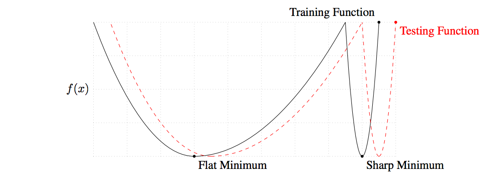

这篇文章中, 将会对一些机器学习中的问题进行探讨, 包括老生常谈的偏差与方差, 以及loss landscape, 数据分布, 样本划分, 迁移学习. 看起来好像内容比较杂, 但是在我看来, 它们都有一个相同点, 即可以指引我们更好地使用机器学习算法.
下面的内容, 有一些是早有定论, 而一些是我个人的理解与认识, 其中不免有不当甚至错误之处, 同学们可以抱着审视的态度来阅读.
前言
还记得我刚开始学习机器学习相关内容的时候, 我把达叔(吴恩达)网易云以及Coursera上面的<机器学习>课程看了. 当时更多的, 是关注于一些算法的具体原理, 比如线性回归, 而对于一些其它方面的东西, 没有太在意.
最近在重新阅读了达叔的
达叔, 永远滴神♪(^∇^*)
偏差与方差
在机器学习中, 可以用偏差和方差(和统计学中的有所不同), 来定性地衡量一个模型的好坏, 并可以指导我们往哪些方向进行改进.
要理解偏差与方差, 可以举一些具体的栗子来进行说明.
比如现在使用机器学习算法进行建模, 将原本的数据集划分成了训练集, 验证集, 测试集, 并假设它们都来自相同的分布.
任务是一个二分类任务, 一个”理想的”分类器(比如人类), 在这个任务中能够取得近乎完美的表现, 即错误率接近0, 那么现在有下面一些情况:
训练集错误率$1\%$, 验证集错误率$11\%$.
这时, 可以说模型的偏差为$1\%$, 方差为$10\%$ ($=11\%-1\%$), 属于低偏差, 高方差.
虽然在训练集上误差率较低, 但是没有能够很好地泛化到验证集上, 这也叫做过拟合.
训练集错误率$15\%$, 验证集错误率$16\%$.
模型的偏差为$15\%$, 方差为$1\%$, 属于高偏差, 低方差.
没有能够较好地拟合训练集, 同时在验证集上表现类似, 这也叫做欠拟合.
训练集错误率$15\%$, 验证集错误率$30\%$.
模型的偏差为$15\%$, 方差为$15\%$, 属于高偏差, 高方差.
没有能够较好地拟合训练集, 同时在验证集上表现更差, 某种程度上可以说是同时过拟合与欠拟合, 过拟合/欠拟合的术语难以准确应用在这里.
训练集错误率$0.5\%$, 验证集错误率$1\%$.
模型的偏差为$0.5\%$, 方差为$0.5\%$, 属于低偏差, 低方差.
在训练集上拟合很好, 同时能够泛化到验证集上, 即没有过拟合, 也没有欠拟合, 算是很棒的模型了.
总体来说, 偏差反映了模型(在训练集上)的拟合能力, 方差反映了模型(在验证集上)的泛化能力. 它们是模型误差的两个主要来源, 我们的目标就是尽可能获得低偏差, 低方差的模型.
上面的栗子中, 假设了一个”理想的”分类器, 其错误率接近0, 然鹅很多实际的任务中, 这样的情况是不多见的, 也就是说存在一定的误差率下限, 这一部分最优错误率(贝叶斯错误率)导致的偏差, 也叫做”不可避免偏差”.
所以, 偏差可以看做是不可避免偏差加上可避免偏差. 而方差则没有不可避免这一说, 因为有一些方法可以有效将方差降得很低, 下面分别列举一些能够降低(可避免)偏差和方差的方法.
降低可避免偏差的方法:
增加模型复杂度.
比如对GBDT来说, 就是设置更深的树的层数, 更多的树的棵树; 对神经网络来说, 就是增加更多的神经元数量, 更多的隐藏层等.
虽然增加模型复杂度一般能够降低偏差, 但也有增加方差的风险.
更改模型结构.
根据具体的任务与数据类型, 选择合适的模型, 更好地学习数据中通用的模式, 降低一些噪音的影响, 也许能够同时降低偏差与方差.
减少或去除正则化.
比如L1和L2正则, dropout等, 这会减小偏差, 但会增大方差.
更多的特征.
更多的特征意味着更多的信息来源, 能够降低偏差, 但如果特征本身有问题(后文详细讨论), 也会增大方差.
降低方差的方法:
降低模型复杂度.
同上.
更改模型结构.
同上.
添加或增加正则化.
同上.
更多的样本.
更多的样本意味能够让模型”看得”更加全面, 这是能够降低偏差的方法, 同时一般不会增加方差.
更少的特征.
同上.
加入提前停止.
可以降低方差, 有可能会增大偏差. 某种意义上类似于正则化方法.
从上面可以看出, 偏差与方差有时候是难以同时简单地降低的, 某个方法在优化其中一个的时候, 可能使得另外一个变糟了. 所以更多的时候是一种权衡, 找到一个平衡点.
Loss Landscape
从优化算法说起
首先说一下loss landscape是个啥, 其实就是损失函数对应的误差随模型参数的分布, 比如对某个一元回归模型, 平方误差损失函数来说, 就是一个凸的曲线. 但是我一时找不到比较合适的中文名称, 所以这里就以loss landscape来指代了.
那么, loss landscape是个啥我们都知道了, 为什么要在这里提它呢?
先从一个栗子说起吧, 大伙都知道, 对于深度学习模型, 不像线性模型那样, 其loss landscape是非常复杂的, 一般来说难以找到所谓的最优解, 但是可以用一些次优解代替, 通常也能有不错的效果. 同时可能也听到过说对于优化算法而言, SGD虽然看起来平凡而陈旧, 但是其得到的模型, 相比其它一些优化算法, 比如Adam, 时常能够具有更好的表现和泛化性, 那么这是为什么呢?
对于一个比较复杂模型的loss landscape来说, 可能会同时有一些比较平坦的极值点, 以及一些比较陡峭的极值点. 一些研究表明, 对于SGD来说, 更容易找到平坦的极值点, 而像Adam这样的优化算法, 相比之下有更大概率陷于陡峭的极值点.

如上图, 黑色的曲线表示训练集的loss landscape, 红色的曲线表示测试集的loss landscape. 一般来说, 从同一个分布中获取的训练集和测试集, 如果在样本量不是特别大的情况下, 真实分布仍然会有一些差异. 在这种情况下, 如果是模型学习到平坦的极值点那里, 那么由数据分布的差异, 带来的loss landscape的一些变化, 对应得到的误差会比较接近; 而如果模型学习到平坦的极值点那里, 对应得到的误差会发生比较大的改变, 且通常是更糟.
上面说明了在loss landscape中, 差不多”深度”(极值点的大小)下, 更加平坦的极值点是更好的. 而为什么Adam会更容易陷入陡峭的极值点呢, 我自己的理解是, Adam这样的自适应(自动调节学习率)优化算法, 在遇到比较陡峭的区域时, 会放慢脚步(降低学习率), 这样就容易陷入. 而SGD并不会这样, 当它遇到比较陡峭的区域时, 由于梯度较大, 步子也会迈得更大, 就更可能越过这样的深坑.
以上, 结合loss landscape, 解释了不同优化算法表现的差异.
我认为对于loss landscape, 应该有一些更加深入的理解与研究. 尽管想知道一个复杂模型的loss landscape的全貌是一件困难的事情, 因为高维空间难以展示和想像, 同时可能也没有这个必要, 但是通过对loss landscape的认识, 可以帮助我们更好地去分析与理解模型. 下面提出一些我个人的观点, 如一开始所说, 这里更多的是一些讨论, 并不是定论.
Loss Landscape 分布变化
上文中也说到了, 除了像线性模型这样简单的模型, 复杂一些模型的loss landscape我们是难以想像的, 但是也许可以做一些定性的分析.
首先, 给定了损失函数的形式后, loss landscape是与模型本身绑定的, 或者说只与模型相关吗? 当然不是, 我认为还与一个东西紧密相关, 那就是数据. 而进一步, 给定总体数据分布, loss landscape确定了吗, 只能说理论上确定了, 这等价于从这个数据分布中抽取足够多的样本, 得到对应的loss landscape.
不过在真实的场景中, 我们拥有的, 是一部分和总体同分布的样本, 但如果样本量不够大, 那么是不足以完全代表总体的, 或者说数据分布会与总体之间存在差异. 假设现在有一个由”无限多”样本得到的loss landscape, 同时还有一个有限多样本得到的loss landscape, 那它们有啥不一样呢? 在模型结构确定的情况下, 前者的loss landscape会相对平滑, 后者的loss landscape相比前者, 可能极值点的位置会发生偏移, 可能会存在更多的陡峭的极值点, 可能会有更深的极值点… 从这里也可以解释, 为什么样本越多总是好的, 为什么同样的模型在小样本上容易过拟合.
上面说完了给定模型, 样本变化对loss landscape分布的影响, 现在再来说一下另外一种情况. 假设现在给定一份足够多的数据样本, 模型复杂度的变化, 会对loss landscape产生怎样的改变呢? 比如线性模型, 其loss landscape凸的, 当变成神经网络, 并添加更多的神经元和隐藏层后, loss landscape会出现更多的坑, 这其中包含一些陡峭的坑, 也包含一些更深的坑.
除了模型, 样本外, 特征, 正则项等, 都会对loss landscape带来改变. 一般来说, 这些改变会朝着两个方向变化, 一是更加平坦, 更加浅; 另一种是更加陡峭, 更加深. 而与之对应的, 更加平坦, 更加浅, 可以减小模型方差, 更加陡峭, 更加深可以减小模型偏差.
利用loss landscape, 可以解释很多东西, 比如可以定性解释为什么添加正则项可以增强模型泛化性. 在loss landscape中搜索最近模型参数时, 正则项可以使参数更加向0处靠拢, 而不是完全落到原本的极值点处. 当应用模型到其它样本(测试集)上时, 由于新的数据分布可能会发生一些变化, 但其loss landscape的极小值一来应该靠近训练集, 二来一般在0附近就有比较好的模型参数, 所以在添加正则项后, 对于分布发生一点变化的数据样本可能更加友好.
如果有一天, 能够有研究者发现对loss landscape的”探测”方法, 从而针对不同的loss landscape, 根据其特点, 调整使用不同的模型和学习策略, 那么也许可以更进一步.
数据分布与样本划分
数据分布一致
众所周知, 想要建立一个表现较好的模型, 并且能够准确评估其性能, 是需要不止一份样本集的. 通常用训练集, 来学习模型参数; 用验证集来评估模型表现, 并根据表现调整超参数或者说选择模型; 最后用测试集, 来评估模型的泛化性能.
一般来说, 给定一份数据集, 按照6:2:2的方式, 就是一种可行的划分方法, 但是如果数据量很大, 那么也不一定要这样. 设立验证集的目的是用来选择模型, 那么只要数据集的量能够有效地表现出模型性能的差别就够了, 比如两个模型的准确率相差$1\%$, 那么100个样本是不够的, 怎么也要1000个样本才能更加靠谱地反映出这种差距. 而设立测试集的目的是用于最终评估模型性能, 那么其实也只要根据具体情况, 样本达到一定的量就行了, 将更多的样本放到训练集, 是有益的 ♪(^∇^*)
在上面的内容中, 基本上都是假设各样本来自一个相同的数据分布, 即训练集/验证集/测试集的分布是一致的, 顶多是由于样本量少一些, 导致的一点点差别.
在这种情况下, 有啥好说的吗? 没啥好说的!
其实可以拿一份大一点的数据试一下, 随机打乱, 并随机抽取出训练集/验证集/测试集(验证集和测试集稍微大点), 拿一个GBDT来跑一跑, 超参数别设置得太离谱, 然后观察一下在个样本集上的指标, 会发现验证集和测试集的指标几乎一毛一样(前提别严重过拟合).
当各样本集的分布一致时, 会有哪些好处呢? 可以用更复杂一些的模型, 尽情地在训练集上找”深坑”; 可以尝试不同的建模方法, 然后查看在验证集表现, 然后选验证集上表现最好的那个, 因为同分布, 测试集上的指标一般是跟着验证集走的.
有时候, 如果对过拟合拿捏得比较好的话, 可能都不需要测试集, 只要分出训练集和验证集就够了.
数据分布不一致
但是这个世界总是充满了变化, 不是吗?
在实际的一些场景下, 样本的产生是伴随着时间的, 同时数据分布也可能随时间发生一些变化. 当我们有了一个模型以后, 是需要用这个模型, 去预测未来发生的事情. 也就是说, 我们建模的目的, 是想让模型在未来表现得较好.
但是我们并没有未来的数据, 如果评估模型在未来的表现呢? 可以截取现有样本中, 最新的一部分样本, 作为测试集, 其余样本用作训练集和验证集, 这样可以通过模型在测试集上的表现, 来进行估计.
不用太担心训练模型用不上最新的数据, 当完成前面的工作后, 最后可以将测试集也加入训练, 最为最终的模型.
现在讨论两种情况, 其中一种是, 尽管存在分布的差异, 但随时间变化并不大, 另一种是分布差异比较大的情况.
那么, 怎么去衡量样本随时间的分布差异大小呢?
实践出真知!
可以在训练集上, 再按时间划分出一个伪测试集, 然后用不同的超参数下, 训练的模型, 记录在训练集, 验证集, 伪测试集上的评估指标. 用这些指标来绘制一些折线图, 比如按训练集指标排序, 查看指标的走势, 或者按训练集指标排序, 单独看训练集和伪测试集对应指标的走势.
一般来说, 随着训练集上指标升高, 验证集上也会升高, 但是到一定阶段就会开始波动(出现过拟合). 而如果同分布, 或者分布差异不大, 那么验证集的指标和伪测试集的指标也是比较一致的(在没过拟合时). 如果发现不一致, 没有明显相关性, 甚至负相关, 那说明分布差异就比较大了.
对于第一种情况, 即分布差异不大的时候, 可以按照分布一致的情况来做, 相对比较轻松.
对于第二种情况, 即分布差异较大的时候, 首先别忙着建模了, 先分析一下, 是确实数据就是差异这么大, 还是说是其它一些因素, 比如某些特征变化太大, 比如信息泄露, 比如存在一些特殊时期的数据把整体拉偏… 结合分析, 去尽可能地减小数据分布的差异, 当看到验证集和伪测试集存在一定相关性时, 说明有效地减小了分布差异. 进一步进行建模的时候, 在划分验证集时, 除了可以在训练集中随机划分, 还可以有一种思路, 即挑选与测试集尽量相似的样本作为验证集(比如训练集中最新的样本), 这样做某种意义上是把数据分布存在差异这个因素考虑进模型训练, 会更加倾向于选择低方差的模型. 但是这两种划分验证集的方式到底哪一种更好, 也是可以根据实践来知道的.
如果, 一顿操作后, 仍然发现分布差异很大, 怎么办? 随缘吧♪(^∇^*) 这时候可能就不能完全依赖于模型在训练集和验证集上的评估指标来选择模型了, 要有目的地选取低方差的模型, 以保证模型在未来的泛化性. 这样好像就是在说, 效果差点问题不大, 稳定能用就行.
迁移学习
在计算机视觉中, 迁移学习指的是在一个很大很复杂的深度学习模型上, 以有监督学习的方式, 来训练一个模型, 然后在这个模型中, 去掉最后的输出层后, 其输出的向量相当于是在原始数据中抽取的高阶特征, 可以将其用在其它一些场景的任务上.
在NLP中, 词向量的预训练相当于是迁移学习, 利用海量的语料, 来进行无监督学习, 得到的词向量能够表征词本身以及词之间的关系, 可以用在各种下游任务上, 加速模型收敛, 提升模型效果.
那么, 在结构化的数据中, 是否也能够有迁移学习呢?
本质上来讲, 迁移学习不是某种具体的方法, 而是一种思想, 即在一些场景下, 用大量的数据, 复杂的模型进行训练, 然后在另外一些场景下, 用一些方式借鉴其成果, 可以较快地用少量数据就可以达到不错的效果.
在上一节中, 讲到了一些场景中, 数据分布会随时间变化, 导致分布不一致, 然鹅还有一些情形下, 是由于目标分布的样本较少导致的.
举个栗子, 想要做一个分类器, 通过一些类似气温, 湿度这样的特征, 来预测某地的天气, 真实的目标数据样本(假设为A样本集), 是该地的过往记录, 但是如果一开始这样的样本很少, 怎么办呢? 可以在网上找寻大量的其它一些地方(类似)天气的样本(假设为B样本集), 用来帮助模型学习, 但是其它地方的样本与目标样本是会有分布差异的, 这时候可以将部分A样本集作为测试集, 并考虑如下一些做法:
单样本集
直接使用A样本集建模.
优点: 分布一致.
缺点: 样本较少.
使用B样本建模, 并使用A样本集作为验证集.
优点: 数据量上来了.
缺点: 分布不一致.
拼接样本集
直接将A样本集与B样本集拼接, 并建模.
优点: 数据全部用上了.
缺点: 由于A样本集量少, B样本集占主导, 可能会导致验证集的涨跌与测试集不一致.
将A样本集与B样本集拼接, 并添加一列特征来区别AB样本集.
优点: 数据全部用上了, 并且模型可以通过添加的特征区别两种分布, 可以在A样本集上学得更好.
缺点: 同上.
这里有个技巧, 就是拼接后, 仍然使用一部分的A样本集来作为验证集, 这样可以一定程度上避免上面说到的缺点.
迁移学习
用B样本集训练模型, 并将该模型输出作为A样本集的特征.
用B样本集训练一个模型, 将其输出作为样本集A的一个特征, 再结合A样本集中挑选出的重要特征, 再在样本集A上训练一个模型, 作为最终模型.
优点: 利用了B样本集的信息, 也确保了最终模型是在A样本集上训练的.
缺点: 没啥大缺点.
用B样本集加部分样本集A训练模型, 再作为A样本集的特征.
相比上面的方法, 就是在训练第一个模型的时候, 也将A样本集中的部分样本加入B样本集, 还可以尝试加大A样本集的权重. 然后再将模型输出作为A样本集的特征, 再在A样本集上训练一个模型, 作为最终模型.
优点: 加入部分A样本和B样本一起训练, 可以让前一个模型的输出质量更高, 并确保了最终模型是在A样本集上训练的.
缺点: 原本就少的A样本集再分了一部分后, 更加雪上加霜了QAQ
上面的方法, 在样本很多, 且分布差异不大的情况下, 作用并不明显. 但是如果目标样本(对应测试集分布的样本)较少, 同时拥有大量差异较大的样本时, 用上面的方法可以获得明显的效果提升.
小结
以上, 阐述了关于偏差与方差, loss landscape的理解, 以及讨论数据分布与样本划分的情况, 并且对结构化数据给出了包含迁移学习思想的方法.
数据是多变的, 当面对一个新的任务, 一份新的数据时, 需要先用一些方法, 来分析数据的模式, 并尝试建模, 根据模型的表现, 来尝试可能带来更好效果的方法. 理解通用的机器学习理论, 多知道一些技巧, 并灵活运用.